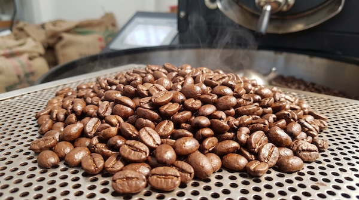

Kopi Banua
Menyediakan Kopi Robusta Asli Banjarmasin dengan cita rasa pilihan.
Cerita di setiap cangkir
Tentang Kami
Kopi Banua adalah kedai kopi rumahan di Jalan Sultan Adam, Banjarmasin. Kami menggunakan biji robusta dari petani Pengaron dan menyangrai sendiri untuk menjaga cita rasa kopi lokal.
Favorit pelanggan
Menu Unggulan
Mampir dan sapa kami
Kontak & Jam Buka
Jam Operasional
- Senin–Kamis15.00–23.00 WITA
- Jumat16.00–00.00 WITA
- Sabtu–Minggu15.00–01.00 WITA
Hubungi Kami
Telepon: 0812-3456-7890
Instagram: @kopibanua.bjm
Alamat: Jl. Sultan Adam No. 42, Banjarmasin
Lebih dekat dengan kami
Galeri Foto


Peta Lokasi Kami
Buat pesananmu